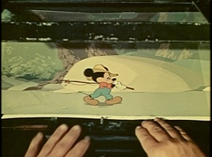

The Multiplane Camera

In the tradition of what he called "our school of self-improvement,"1 Walt Disney patented the Multiplane camera on November 16,1936, with the help of inventor William E. Garity. The purpose of the camera was to create an illusion of realistic depth that was not previously possible in flat 2-D animation. In the behind-the-scenes featurette Tricks of the Trade, originally broadcast on television show in 1957, Walt explained the process and illustrated the way animators traditionally created depth. With clips for illustration, the piece shows how the traditional methods work for certain scenes, such as a pan with one character walking left to right across a relatively simple background. According to a 1938 article in American Cinematographer,

Filming Technologies
Creating deep forests March 30, 2007

“For straightforward [animation] camerawork the backgrounds are cells are photographed … with the background held on a flat base and the cells superimposed directly on top of it, and all held in register by accurate registering pegs which engage perforations in the celluloids, while a pneumatically operated glass pressure plate holds all flat.”2

(left and below) An animator works with a traditional shooting setup
Photos © Disney


(left) The Multiplane camera
(above) Graphic depiction of how the camera splits up background and foreground images according to their placement in the image.
Photos © Disney
Each plane could be moved independently of the others in any direction (up/down and left/right as well as forward/backward)and was controlled by a different operator. The gears on each level engage with racks on the vertical columns, and the geared indicators permit accurate moves of 1/100 of an inch, permitting exposure times from 1 to 24 seconds.4 The timings were planned meticulously and the camera operator directed a team of technicians that worked the different plates:
The operators used exposure sheets and photometers (highly sensitive light meters) that were accurate to a 1/2 candle per square foot. The lighting for the camera was built into the crane mechanism, and powered by a 75,000 watt generator, controlled by automatic voltage regulation that limited fluctuations by less than 1/10 of a volt. Various lamphouses contained batteries of high-wattage bulbs that were laterally aligned in the filaments. Surface mirrors then concentrated the light on a photographic area, and the operator adjusted his exposure accordingly.6
This highly sophisticated piece of equipment created stunning images of forests, landscapes and villages. The company used the camera in many of its features until its last use in 1989 for The Little Mermaid.

1. Walt Disney, as quoted in “Tricks of the Trade,” seen on Snow White and the Seven Dwarves, DVD, directed by David Hand (1937; Burbank, CA: Buena Vista Home Entertainment, 2001).
2. William Stull, “Three hundred men: and Walt Disney” American Cinematographer 19 (February 1938): 50.
3. Walt Disney, as quoted in “Tricks of the Trade”
4. Unknown author, “Multiplane Camera - Technical Specifications,” Published in conjunction with the Multiplane camera display shown at the Disney Archives at Walt Disney Studios (permanent display).
5. William Stull, “Three hundred men: and Walt Disney,” 50.
6. Unknown author, “Multiplane Camera - Technical Specifications.”
But to plan for the upcoming production of Snow White, their first ever full-length animated feature, Disney wanted to up the ante and create what Walt called “a painting [that behaved] like a real piece of scenery under the camera.”3 The Tricks of the Trade piece illustrates this concept with a scene from the first short that utilized the Multiplane camera, The Old Mill. An establishing shot with the mill has the moon at a certain size in proportion to the windmill itself. As the camera pans in, the moon gets bigger, which is not what happens to the moon in real life as you walk towards an object:
(below) Wide shot (left) and closeup (right) of a tracking shot in The Old Mill
Photo © Disney
The Multiplane camera was invented to solve this problem and facilitate animation that more realistically represented human vision. The camera itself pointed downwards, mounted at the top of a series of six slotted levels on a metal crane frame. Each level held a glass plate with either background or foreground/character elements, and each represented a different visual plane in the scene:
“The problems of perspective, proportions and timing in these multiplane scenes can be incredibly complex ... in one plane the drawings of the character would animate, following one scheme of perspective and timing. Behind him, the background would move past, not only in a different physical plane, but timed to an entirely different but necessarily rigidly-proportioned sequence.”5


(left) The camera operator shoots a frame in a Multiplane setup
(below) Closeup of the gears on one individual plane
Photos © Disney
Photo © Disney